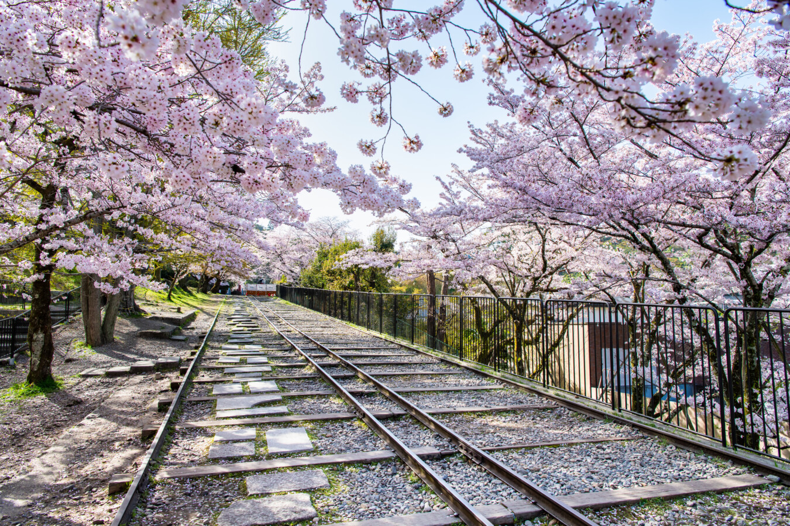
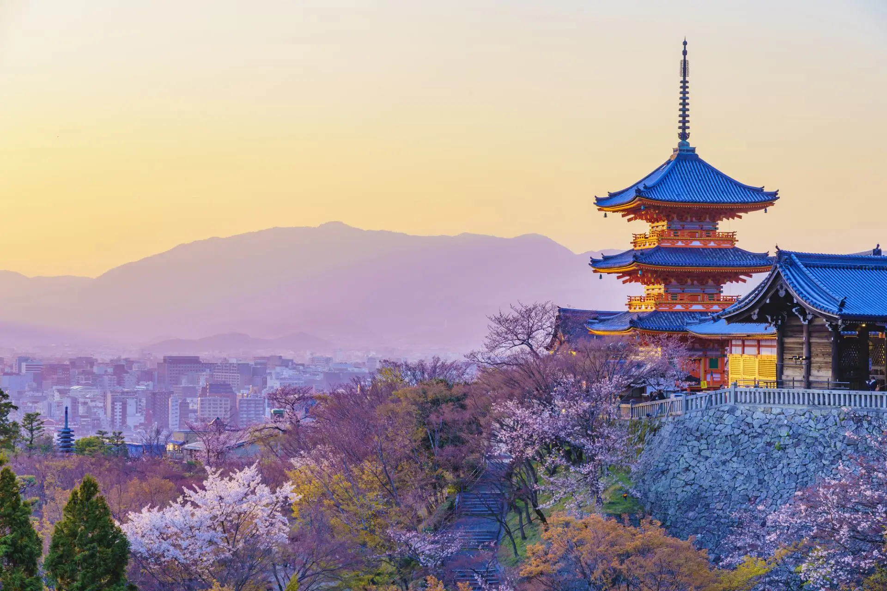
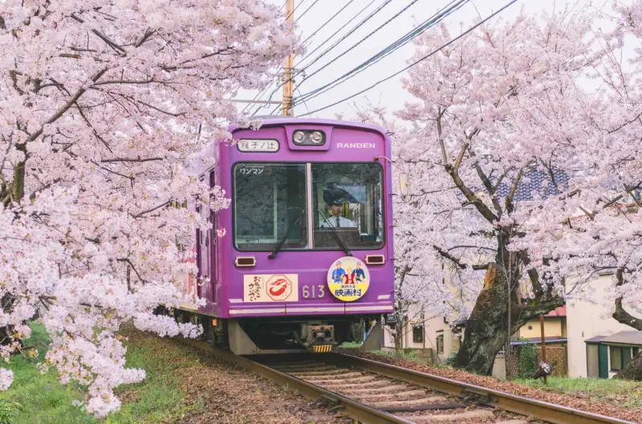
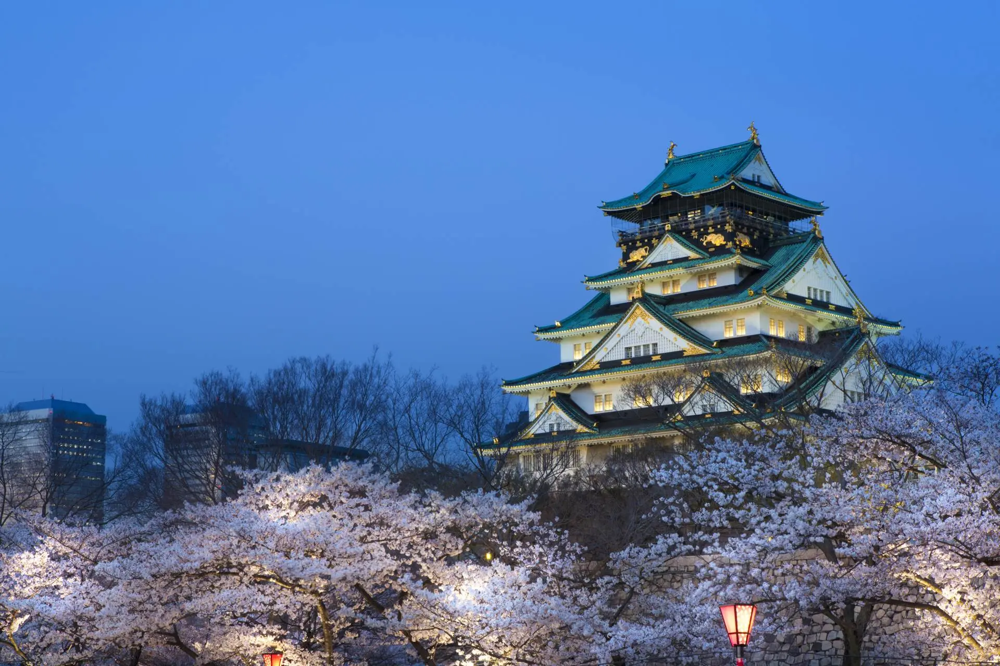
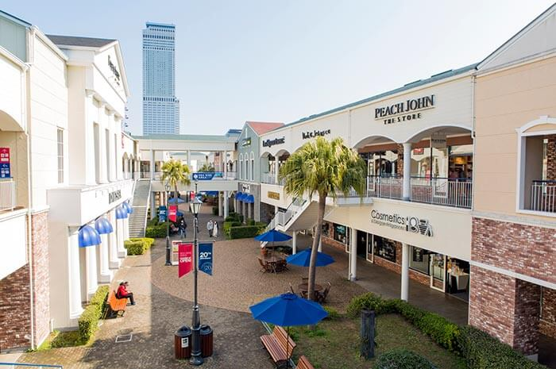

京都櫻之旅
THE ETERNAL SOUL OF KYOTO
2026 京都．櫻花盛宴
慢步在粉嫩的古都之春
📍 日本・京都 / 大阪 / 奈良
📅 2026/03/24（二）- 03/28（六）
👥 限量 20 位名額
活動介紹
2026 京都櫻花盛宴：
重啟感官的古都之春
京都的春天，是一場跨越千年的粉色約定。 在 2026 年的春分時節，我們特別規劃了這場為期五天的「深度賞櫻」之旅。 為了確保每一位貴賓都能獲得最細膩的服務與深度導覽， 我們堅持「20 人小團制」，帶領您深入清水寺的清晨、 嵐山的溪谷，以及奈良小鹿奔跑的森林。 這不只是一趟旅行，更是一次與心靈對話的文化饗宴。
限量 20 人深度小團
專業導遊深度解說
保證入住五星大倉
懷石與和牛極致饗宴

活動資訊
📅
活動時間
2026/03/24 - 03/28
📍
活動地點
京都・大阪・奈良
👥
限量名額
總量 20 席
⏰
行程天數
5 天 4 夜
航班資訊
去程航班
星宇航空 JX822
日期 DATE
2026/03/24
10:30
台北
桃園 (TPE)
NON-STOP
14:10
大阪
關西 (KIX)
回程航班
星宇航空 JX823
日期 DATE
2026/03/28
16:00
大阪
關西 (KIX)
NON-STOP
18:30
台北
桃園 (TPE)
詳細行程

Day 1
啟程．關西櫻花序幕
桃園國際機場
關西國際機場
大阪夜色
搭乘星宇航空前往大阪。首晚入住地標五星萬豪都酒店，享用頂級和牛晚宴。
🕒 詳細時間排程
- 08:30桃園機場集合登機
- 10:30搭乘星宇航空精品客機
- 14:10抵達關西空港
- 16:00入住大阪萬豪都酒店
- 18:30晚餐：黑毛和牛燒肉晚宴
- 20:30阿倍野展望台賞夜景

Day 2
京都．世界遺產巡禮
清水寺
三年坂．二年坂
圓山公園
祇園花見小路
造訪清水寺賞櫻，漫步復古坂道。傍晚於圓山公園觀賞著名的祇園垂櫻。
🕒 詳細時間排程
- 09:00專車前往京都
- 10:30清水寺世界遺產賞櫻
- 12:30午餐：順正湯豆腐懷石午餐
- 14:30二、三年坂老街散策
- 16:30圓山公園賞垂櫻
- 18:30晚餐：京都相撲火鍋晚餐

Day 3
嵐山．嵯峨野小火車櫻花隧道
嵯峨野觀光小火車
嵐山渡月橋
天龍寺
竹林小徑
搭乘復古紅黑配色的觀光小火車，穿梭在保津川溪谷的粉嫩隧道間。在嵐山的竹林深處，尋找春天的靜謐與寺院庭園的禪意。
🕒 詳細時間排程
- 09:00搭乘嵯峨野觀光小火車
- 11:00嵐山渡月橋散策
- 12:30午餐：嵐山和風京料理
- 14:30天龍寺曹源池賞櫻
- 16:00野宮神社與竹林漫步
- 18:00晚餐：大倉飯店法式主廚宴

Day 4
奈良．小鹿與大阪城
奈良公園
東大寺
大阪城公園
心齋橋商圈
前往奈良與小鹿互動，賞東大寺大佛。傍晚造訪大阪城公園欣賞壯闊櫻花林。
🕒 詳細時間排程
- 09:30奈良公園櫻花下餵鹿
- 11:00世界遺產東大寺參拜
- 13:00午餐：大和豚壽喜燒午餐
- 15:30大阪城公園環河賞櫻
- 18:00心齋橋商圈自由逛街

Day 5
賦歸．滿載櫻花回憶
Rinku Town Outlet
關西國際機場
桃園國際機場
最後在臨空城 Outlet 盡情掃貨，帶著戰利品與粉嫩回憶平安返回桃園。
🕒 詳細時間排程
- 10:00臨空城 Outlet 購物
- 13:30前往關西機場辦理托運
- 14:30機場免稅店最後採買
- 16:00搭機啟程返台
- 18:30抵達桃園機場
報名方式與說明
為了維護旅遊品質，我們採小團審核制。請依循以下步驟完成報名程序：
1.下載報名文件
下載「活動通知單」與「活動報名表」並詳細閱讀內容。
2.填妥並寄回
填妥報名表後，掃描或拍照寄至 service@kyotosakura.com。
3. 訂金確認
專員收到信件後將在24小時內聯繫您支付訂金，保留正式席次。
客服專線
02-1234-5678
官方信箱
service@kyotosakura.com
立即報名 2026 賞櫻團
請下載官方報名表單填寫，並寄回指定信箱
活動通知單下載(.PDF) 活動報名表下載 (.docx)
THEN SEND TO
寄送至官方信箱
service@kyotosakura.com
* 信件標題請註明「2026賞櫻報名 - [您的姓名]」。
* 收到報名表後，專員將於 24 小時內與您聯繫確認。
©2026- 京都賞櫻旅遊有限公司